[Here’s Day 1 if you missed it.]
After breakfast on Wednesday, we opted for the optional, short bus ride to the nearby National Shrine of Saint Maximillian Kolbe at Marytown. Our time would be limited here, but we took in all in with pleasure.
I’ve long been attracted to St. Maximillian Kolbe’s story of heroic virtue; of how he, a priest, asked that the Nazis take his life during World War II instead of that of the young father who had been targeted for death. He died at Auschwitz, a martyr for the faith and for love of another.
The above painting is a depiction of that brave moment, and was part of an exhibition in the lower level of the shrine. Joanne and I almost missed our chance to see it, but more on that later.
Here is a sampling of the shrine itself. It was beautiful, and meaningful, and I’m so glad we didn’t say “No” to this side trip. It was a wonderful way to spend the morning, and to just stay a while and pray for the rest of our journey.
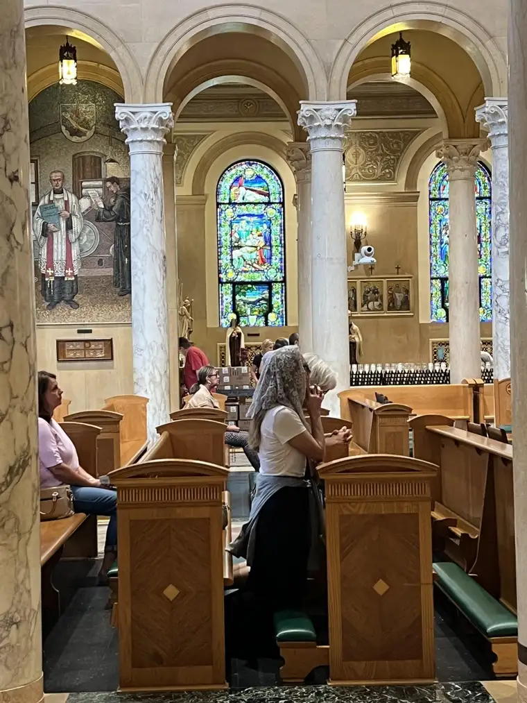
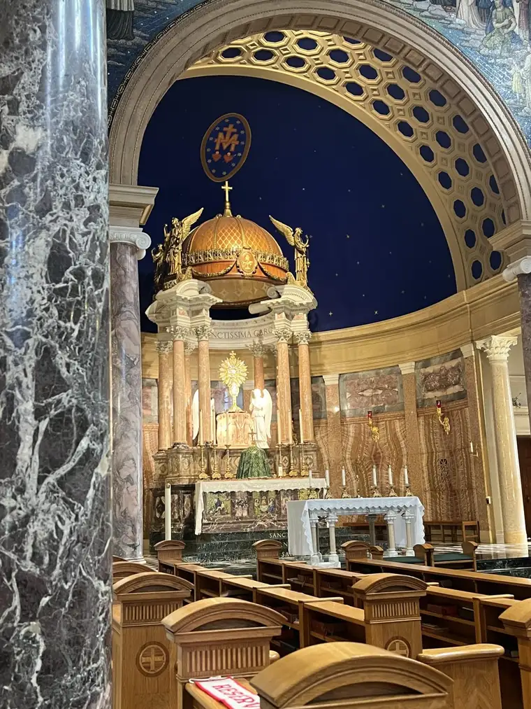

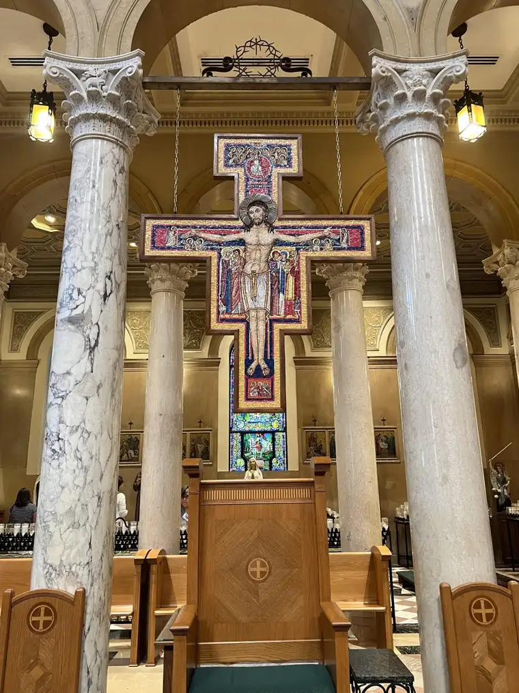
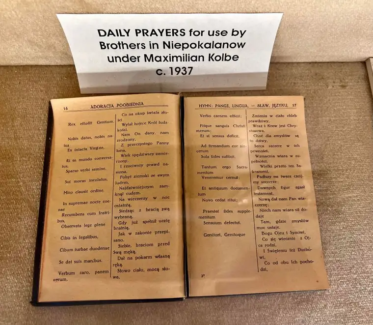
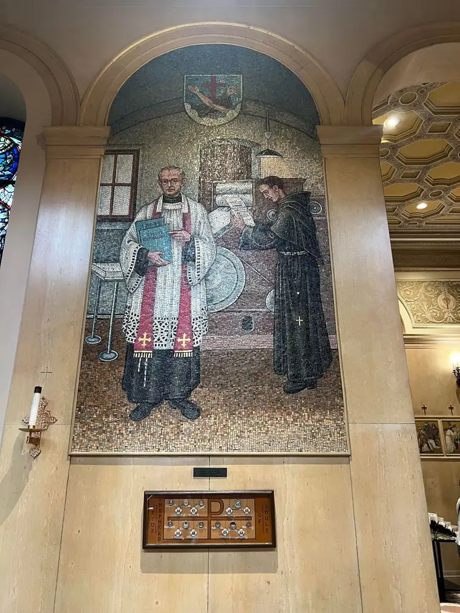
We did have Mass earlier, too. That’s one of the things I love about Catholic pilgrimages. It’s Mass every day, and just a good way to start out the day, with the Lord so close.
Getting back in touch with St. Kolbe felt necessary. We need those frequent reminders of what it is we’re doing–journeying closer to eternal life–and how we’re to do it–by dying to self and living for others, as Christ did.
But we were so enamored that we lost track of time, and realized too late that we would not be able to spend time at the exhibit, which, we knew, would make an impact. “You’ll just have to come back later,” some of our fellow pilgrims said. Maybe, but we weren’t so sure we would pass this way again.
Joanne and I left the grounds that day with regret that we had not been mindful enough with time to see it all. But, our bus needed to move on, so we push forward with those feelings of incomplete.
Our bus had only been on the road a few minutes, however, when, like its counterpart the day before, it began to break down. The driver had to make a quick turn into a side road to assess the situation, and as we hung a left, I saw that we would be stalled about a half a block from the building that housed the exhibit. “I think we’re going to get to see it after all,” I whispered to Joanne.
Yes, it’s true. We were not devastated the bus broke down right there. Not that we relished the hassle. It was stressful. But, there was a gift in it, too.
Here we are saying goodbye to Bus #1, which would continue on while we waiting for our replacement bus.
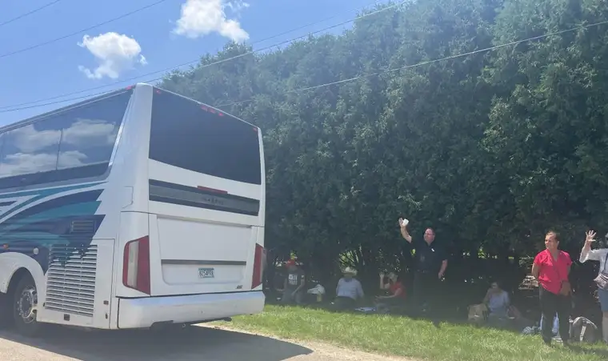
After finding out we’d be waiting at least 45 minutes for a new, replacement bus (which turned into more like 90 minutes), we were given the okay to visit the exhibit. Finally, our morning was complete.
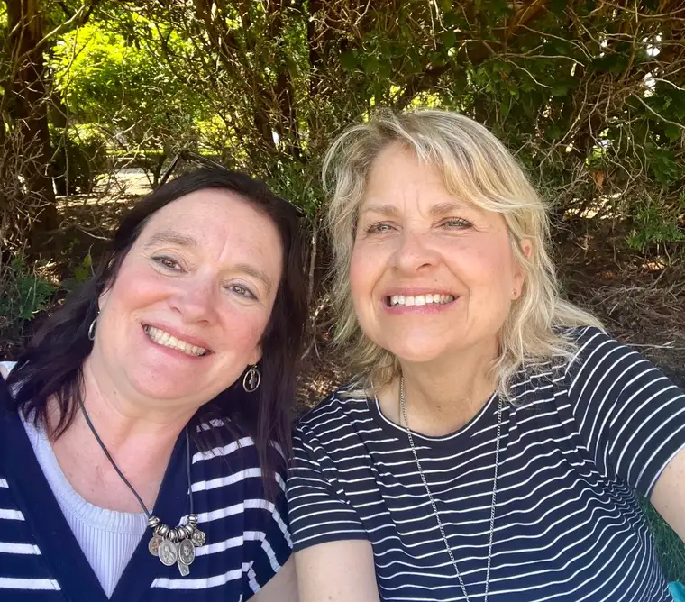
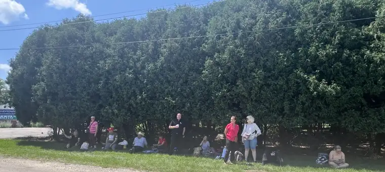
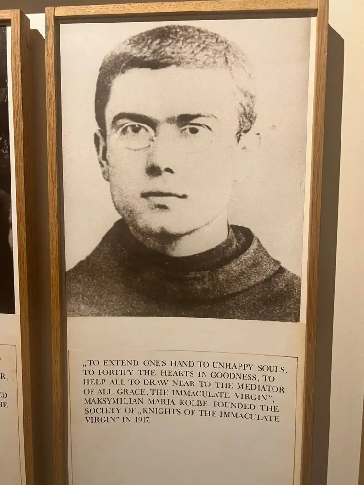
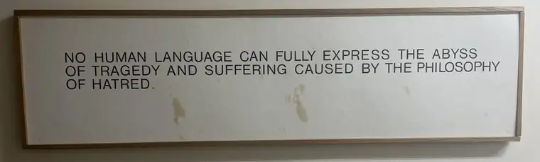

Our group gathered in this spot to await the replacement bus that was promised. It was a lovely little area in the shade and gave us a chance to regroup, have a snack, and visit. Joanne and I had built a great trust from the very beginning that we were in God’s hands and being well cared for. We weren’t worried; just going with the flow.
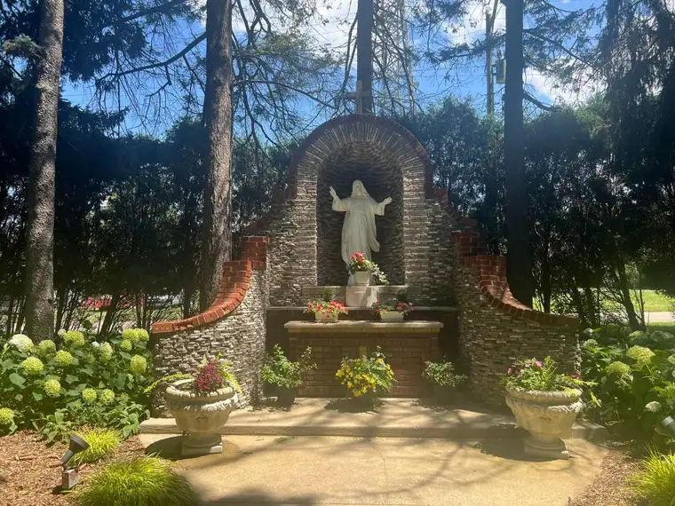
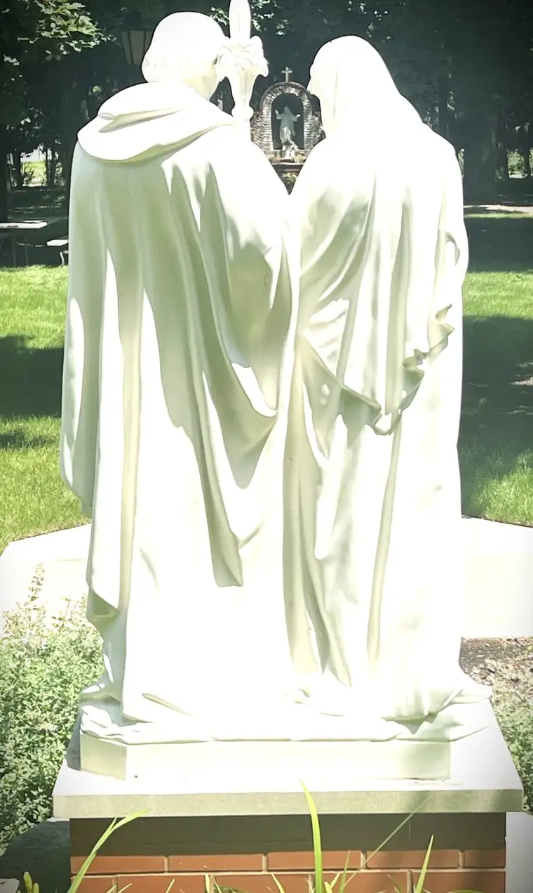
By the time our new bus arrived, we were so happy to be on our way once again. The new bus was larger with more amenities. But our several hour delay meant that we would be cutting it very close to start time for the grand congress opening in Indianapolis. Would we make it? Stay tuned for tomorrow’s entry to find out!